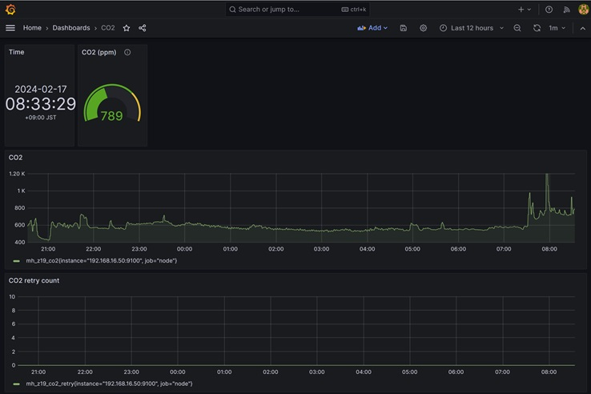
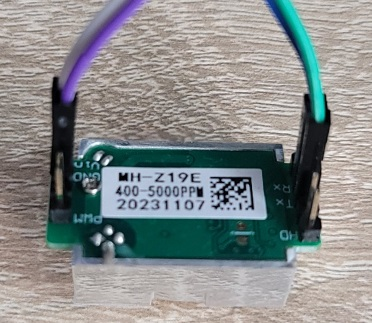
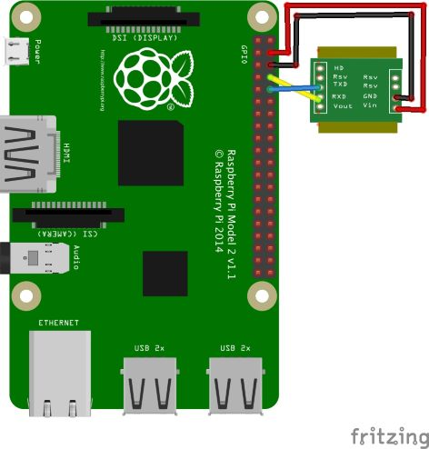

ラズパイでCO2をはかる
概要
ラズパイにCO2センサー mh_z19 で二酸化炭素を測定し、node-exporter でデータ取得し、prometheusでグラフ化する。


ラズパイ設定
シリアル設定
rootで作業
sudo su -
raspi-config
3 Interface Options
I1 SSH Enable/disable remote command line access using SSH
I2 VNC Enable/disable graphical remote desktop access
I3 SPI Enable/disable automatic loading of SPI kernel module
I4 I2C Enable/disable automatic loading of I2C kernel module
☆I5 Serial Port Enable/disable shell messages on the serial connection
I6 1-Wire Enable/disable one-wire interface
I7 Remote GPIO Enable/disable remote access to GPIO pins
Would you like the serial port hardware to be enabled? で「はい」を選択する
再起動
reboot
pip install
sudo su -
apt update
apt upgrade
apt install python3-pip
pip3 install --break-system-packages --user mh_z19
python -m mh_z19
CO2センサー mh_z19接続

二酸化炭素がとれる
pi@raspberrypi:~ $ sudo python -m mh_z19
{"co2": 593}
pi@raspberrypi:~ $
温度もとれるっぽい
pi@raspberrypi:~ $ sudo python -m mh_z19 --all
{"co2": 402, "temperature": 26, "TT": 66, "SS": 0, "UhUl": 13568}
pi@raspberrypi:~ $
node-exporter インストール
text collect を使うので prometheus-node-exporter-collectors を apt install
apt install prometheus-node-exporter-collectors
node-exporter で読み込むテキストデータの場所
ls -l /var/lib/prometheus/node-exporter/
スクリプト設置
スクリプト作成
vi get-val-co2.sh
#!/bin/bash
TMP_FILE=/var/lib/prometheus/node-exporter/mh_z19.prom.tmp
PRM_FILE=/var/lib/prometheus/node-exporter/mh_z19.prom
#CO2
ITEM=mh_z19_co2
RETRY=mh_z19_co2_retry
i=0
while [ $i -le 10 ]
do
((i++))
echo "count : $i "
sleep 1
VALUE=`python -m mh_z19 | jq .[]`
if [ -z $VALUE ]; then
echo "value : null retry"
else
echo "value : $VALUE"
break
fi
done
echo $ITEM $VALUE > $TMP_FILE
echo $RETRY $i >> $TMP_FILE
mv $TMP_FILE $PRM_FILE
動作確認
chmod 755 get-val-co2.sh
./get-val-co2.sh
以下に保存されていることを確認
ls -l /var/lib/prometheus/node-exporter/
cat /var/lib/prometheus/node-exporter/mh_z19.prom
mh_z19_co2 713
mh_z19_co2_retry 0
prometheus 設定
prometheus.yaml に追記する
- job_name: node
# If prometheus-node-exporter is installed, grab stats about the local
# machine by default.
static_configs:
- targets:
- localhost:9100
- 192.168.0.50:9100 ★
参考
https://github.com/UedaTakeyuki/mh-z19